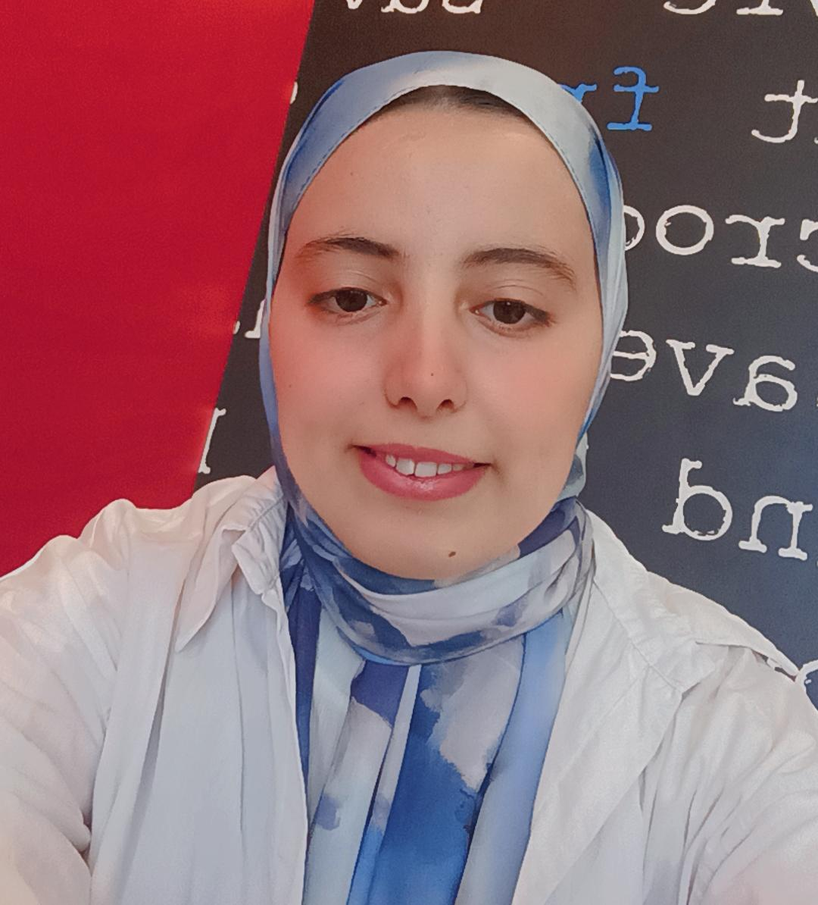

<link rel="stylesheet" href="https://cdn.jsdelivr.net/npm/@tabler/icons-webfont@2.44.0/tabler-icons.min.css">

<style>
  .fatima-profile {
    font-family: "Segoe UI", Arial, sans-serif;
    color: #10243f;
    background: #eef1f5;
    border-radius: 26px;
    overflow: hidden;
    max-width: 1180px;
    margin: auto;
    box-shadow: 0 24px 60px rgba(15, 46, 92, 0.14);
  }

  .fatima-hero {
    min-height: 620px;
    display: grid;
    grid-template-columns: 1fr 1fr;
    align-items: center;
    gap: 35px;
    padding: 70px 8%;
    position: relative;
    overflow: hidden;
    background:
      radial-gradient(circle at 18% 12%, rgba(255, 255, 255, 0.55), transparent 26%),
      linear-gradient(135deg, #f2f5f8 0%, #e2e8f0 52%, #cfd8e3 100%);
  }

  .fatima-hero::before {
    content: "";
    position: absolute;
    top: -80px;
    left: -60px;
    width: 360px;
    height: 360px;
    border: 1px solid rgba(30, 64, 120, 0.12);
    border-radius: 38%;
  }

  .fatima-content {
    position: relative;
    z-index: 2;
    max-width: 540px;
  }

  .fatima-eyebrow {
    display: inline-flex;
    align-items: center;
    gap: 8px;
    margin-bottom: 18px;
    color: #2563a8;
    font-weight: 700;
    font-size: 15px;
  }

  .fatima-eyebrow i {
    font-size: 22px;
  }

  .fatima-title {
    font-size: clamp(38px, 6vw, 66px);
    line-height: 1.05;
    color: #08285a;
    margin: 0 0 20px;
    font-weight: 900;
    letter-spacing: 0;
  }

  .fatima-title span {
    color: #0b4f9c;
  }

  .fatima-description {
    color: #475569;
    font-size: 17px;
    line-height: 1.75;
    margin: 0 0 28px;
    max-width: 490px;
  }

  .fatima-actions {
    display: flex;
    flex-wrap: wrap;
    gap: 14px;
    margin-bottom: 32px;
  }

  .fatima-btn {
    display: inline-flex;
    align-items: center;
    gap: 9px;
    min-height: 44px;
    padding: 0 24px;
    border-radius: 999px;
    text-decoration: none;
    font-weight: 800;
    font-size: 14px;
  }

  .fatima-btn-primary {
    background: #0b5cad;
    color: #ffffff;
    box-shadow: 0 12px 24px rgba(11, 92, 173, 0.22);
  }

  .fatima-btn-dark {
    background: #08213f;
    color: #ffffff;
    box-shadow: 0 12px 24px rgba(8, 33, 63, 0.18);
  }

  .fatima-badges {
    display: flex;
    flex-wrap: wrap;
    gap: 10px;
  }

  .fatima-badge {
    display: inline-flex;
    align-items: center;
    gap: 8px;
    padding: 10px 14px;
    border-radius: 999px;
    background: rgba(255, 255, 255, 0.55);
    border: 1px solid rgba(255, 255, 255, 0.75);
    color: #17365d;
    font-size: 13.5px;
    font-weight: 800;
  }

  .fatima-visual {
    position: relative;
    z-index: 2;
    display: grid;
    place-items: center;
    min-height: 500px;
  }

  .fatima-portrait-wrap {
    position: relative;
    width: min(430px, 80vw);
    aspect-ratio: 1;
    display: grid;
    place-items: center;
  }

  .fatima-ring {
    position: absolute;
    inset: 18px;
    border-radius: 50%;
    border: 24px solid rgba(37, 99, 168, 0.24);
    border-left-color: #08285a;
    border-bottom-color: #08285a;
    transform: rotate(-20deg);
  }

  .fatima-portrait {
    position: relative;
    width: 275px;
    aspect-ratio: 1;
    border-radius: 50%;
    display: grid;
    place-items: center;
    background: #ffffff;
    border: 10px solid rgba(255, 255, 255, 0.95);
    box-shadow: 0 24px 45px rgba(15, 46, 92, 0.24);
    overflow: hidden;
  }

  .fatima-portrait img {
    width: 100%;
    height: 100%;
    object-fit: cover;
    object-position: center;
  }

  .fatima-floating-card {
    position: absolute;
    left: 6%;
    bottom: 12%;
    display: flex;
    align-items: center;
    gap: 10px;
    padding: 13px 16px;
    border-radius: 18px;
    background: rgba(255, 255, 255, 0.78);
    border: 1px solid rgba(255, 255, 255, 0.9);
    box-shadow: 0 16px 32px rgba(15, 46, 92, 0.12);
    color: #10243f;
    font-weight: 900;
  }

  .fatima-floating-card i {
    color: #0b5cad;
    font-size: 24px;
  }

  .fatima-sections {
    display: grid;
    grid-template-columns: repeat(4, 1fr);
    gap: 18px;
    padding: 0 8% 65px;
    background: #eef1f5;
  }

  .fatima-card {
    background: rgba(255, 255, 255, 0.68);
    border: 1px solid rgba(255, 255, 255, 0.9);
    border-radius: 18px;
    padding: 22px;
    box-shadow: 0 18px 35px rgba(15, 46, 92, 0.09);
  }

  .fatima-card h2 {
    display: flex;
    align-items: center;
    gap: 10px;
    font-size: 18px;
    margin: 0 0 14px;
    color: #08285a;
  }

  .fatima-card h2 i {
    color: #0b5cad;
    font-size: 23px;
  }

  .fatima-card p,
  .fatima-card li,
  .fatima-card a {
    color: #475569;
    font-size: 14.5px;
    line-height: 1.7;
  }

  .fatima-card a {
    color: #0b5cad;
    font-weight: 800;
    text-decoration: none;
    word-break: break-word;
  }

  .fatima-card ul {
    list-style: none;
    display: grid;
    gap: 8px;
    margin: 0;
    padding: 0;
  }

  .fatima-card li {
    display: flex;
    gap: 8px;
  }

  .fatima-card li::before {
    content: "✓";
    color: #0b5cad;
    font-weight: 900;
  }

  @media (max-width: 900px) {
    .fatima-hero {
      grid-template-columns: 1fr;
      padding: 46px 6%;
      text-align: center;
    }

    .fatima-content {
      margin: auto;
    }

    .fatima-description {
      margin-left: auto;
      margin-right: auto;
    }

    .fatima-actions,
    .fatima-badges {
      justify-content: center;
    }

    .fatima-visual {
      min-height: 390px;
    }

    .fatima-portrait-wrap {
      width: min(350px, 82vw);
    }

    .fatima-portrait {
      width: 215px;
    }

    .fatima-sections {
      grid-template-columns: 1fr;
      padding: 0 6% 42px;
    }
  }

  @media (min-width: 901px) and (max-width: 1150px) {
    .fatima-sections {
      grid-template-columns: repeat(2, 1fr);
    }
  }
</style>

<main class="fatima-profile">
  <section class="fatima-hero">
    <div class="fatima-content">
      <div class="fatima-eyebrow">
        <i class="ti ti-school"></i>
        
      </div>

      <h1 class="fatima-title">
        Bonjour, je suis<br>
        <span>Fatima Mazouz</span>
      </h1>

      <p class="fatima-description">
        Professeure stagiaire en informatique au CRMEF de Marrakech, engagée dans
          le développement de compétences pédagogiques et didactiques favorisant un
          enseignement innovant et centré sur l'apprenant. Mon parcours universitaire
          en informatique me permet de mobiliser des connaissances scientifiques et
          technologiques au service de l'éducation et de l'intégration du numérique
          dans les apprentissages.
      </p>

      <div class="fatima-actions">
        <a class="fatima-btn fatima-btn-primary" href="#profil-fatima">
          <i class="ti ti-user-star"></i>
          Voir le profil
        </a>
        <a class="fatima-btn fatima-btn-dark" href="mailto:mazouzfatiimaa@gmail.com">
          <i class="ti ti-mail"></i>
          Me contacter
        </a>
      </div>

      <div class="fatima-badges">
        <span class="fatima-badge"><i class="ti ti-code"></i> Informatique</span>
        <span class="fatima-badge"><i class="ti ti-users"></i> Cycle collégial</span>
        <span class="fatima-badge"><i class="ti ti-calendar"></i> 2025 - 2026</span>
      </div>
    </div>

    <div class="fatima-visual">
      <div class="fatima-portrait-wrap">
        <div class="fatima-ring"></div>

        <div class="fatima-portrait">
          <!-- Remplacer PHOTO_URL_ICI par le lien public de votre photo -->
          
        </div>

        <div class="fatima-floating-card">
          <i class="ti ti-device-laptop"></i>
          
        </div>
      </div>
    </div>
  </section>

  <section class="fatima-sections" id="profil-fatima">
    <article class="fatima-card">
      <h2><i class="ti ti-id"></i> Informations</h2>
      <ul>
        <li>Professeure stagiaire au CRMEF de Marrakech</li>
        <li>Filière : Enseignement de l'informatique</li>
        <li>Cycle : Collégial</li>
 <h2><i class="ti ti-address-book"></i> Coordonnées</h2>
<ul>
        <li>E-mail : <a href="mailto:mazouzfatiimaa@gmail.com">mazouzfatiimaa@gmail.com</a></li>
        <li>LinkedIn : <a href="https://www.linkedin.com/in/fatima-mazouz-2a926025b" target="_blank" rel="noopener">fatima-mazouz-2a926025b</a></li>
        <li>Ville : Agadir, Maroc</li>
      </ul>
    </article>

    <article class="fatima-card">
      <h2><i class="ti ti-certificate"></i> Formation</h2>
      <ul>
       <h3>Formation qualifiante des enseignants stagiaires</h3>
            <p>CRMEF de Marrakech - 2025 - 2026</p>
 <h3>Licence d'Études Fondamentales</h3>
            <p>Sciences Mathématiques et Informatique - Université Ibn Zohr - Agadir</p>
<h3>DEUG - Sciences Mathématiques et Informatique</h3>
            <p>Université Ibn Zohr - Agadir</p>
 <h3>Baccalauréat</h3>
            <p>Sciences Mathématiques A</p>
      </ul>
    </article>

    

    <article class="fatima-card">
      <h2><i class="ti ti-tools"></i> Compétences</h2>
      <ul>
        <li>Conception de séances d'apprentissage</li>
        <li>Intégration pédagogique des TICE</li>
        <li>HTML, CSS, JavaScript et PHP</li>
      </ul>
    </article>
  </section>
</main>
